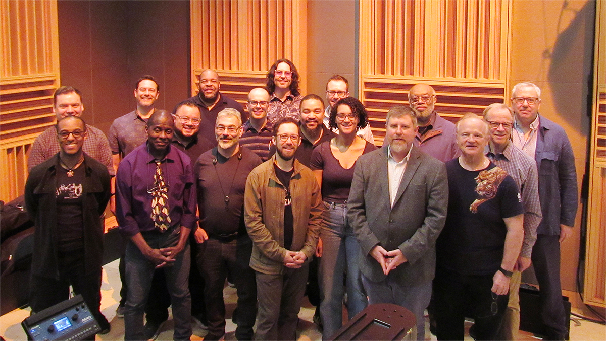
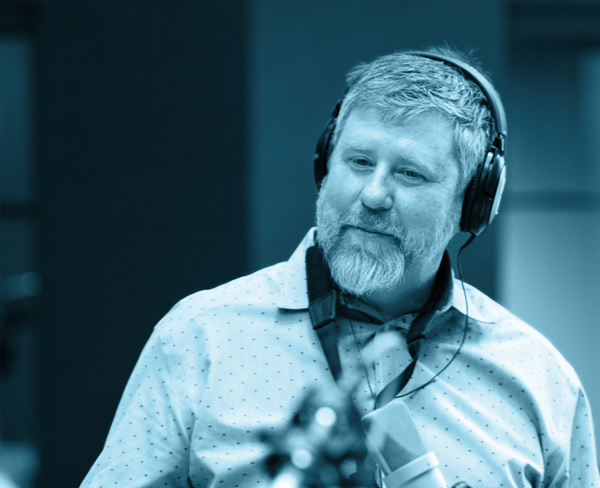

Our Mission

Jason Robinson’s Janus Ensemble, Inc. is a 501(c)(3) non-profit organization dedicated to the creation, presentation, and preservation of creative music. We believe that music reveals the human experience, and our mission is to help bring imaginative music to listeners and communities.
Through the Janus Orchestra and our various smaller Janus Ensemble configurations, we strive to foster a deeper understanding of jazz and experimental music through high-caliber performances, professional recordings, and meaningful community engagement.
About Jason Robinson

Composer, saxophonist, flutist, and scholar Jason Robinson is the creative force behind the Janus Ensemble. His work is characterized by a "Janus-faced" perspective—looking simultaneously toward the deep traditions of jazz and the limitless possibilities of future experimentalism.
With a career spanning three decades of performing, composing, and research, Robinson’s music invites performers and audiences alike to dream in imaginative sound worlds, while maintaining a profound connection to the cultural roots of the music.
Community & Education
Beyond the concert hall, Jason Robinson's Janus Ensemble, Inc. is committed to musical education, cultural preservation, and community outreach. We partner with local schools and art organizations to provide workshops and educational opportunities, ensuring that the next generations of musicians, listeners, and community arts leaders have access to the tools, sounds, and traditions of creative music.
We raise funds to ensure that every musician and cultural worker involved in our projects receives a living wage, recognizing that a vibrant arts community starts with supporting the people who create it.
Board of Directors
Priscilla Maria Page
Dr. Priscilla Maria Page is a writer, dramaturg, and associate professor of theater at the University of Massachusetts Amherst where she is also an affiliated faculty with the W.E.B. DuBois Department of Afro-American Studies and the Center for Braiding Indigenous Knowledges and Science. She is one of the founding co-directors of Pioneer Valley Jazz Shares who serves as vice president. She also serves on the board of directors for the Institute of the Musical Arts.
Glenn Siegel founded the Magic Triangle Jazz Series at the University of Massachusetts Amherst, which he directed from 1990-2020. He is the founding co-director of Pioneer Valley Jazz Shares, a community-based, shareholder-funded concert organization. Mr. Siegel served as Manager of WMUA-91.1FM at UMass for 28 years, where he trained students and the community in all facets of radio, and hosted Jazz in Silhouette.